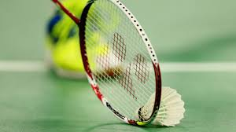

My name is Tameem Mahmnoud and I was born on April 14, 2006 to quite a large family. I will be graduating from my home school of Clovis West on June 5, 2024 and I plan to attend college afterwards. My Hobbies include playing video games, playing Badminton, reading, watching movies/tv shows, and every once in a while I like to go go kart racing. I also attend the Esports club at my school which has been really nice and fun, especially when you have some friends with you to enjoy it. I have gotten honor rolls multiple times in my high school career as well as gotten a principal's honor roll as well. My GPA has stuck to a consistent 3.6 or higher ever since middle school and being able to join two AP classes (AP Computer Science Principles and Ap Environmental Science) with me also getting a 3 on the computer science AP test. I have skills in Mathematics( up to advanced math), HTML, CSS, and a little javascript but I hope to hone these skills further for my future.

My favorite hobby is definitely video games by a long shot and it was my main hobby ever since I was 5. My favorite video games are Portal 2, Legend of Zelda, Tears of the Kingdom, Celeste, Super Mario Galaxy 2, and Rhythm Heaven Fever.
My favorite sport is hands down badminton because it has a fun rhythm of trying to keep up a rally while also trying to find opportunities to score a point.
